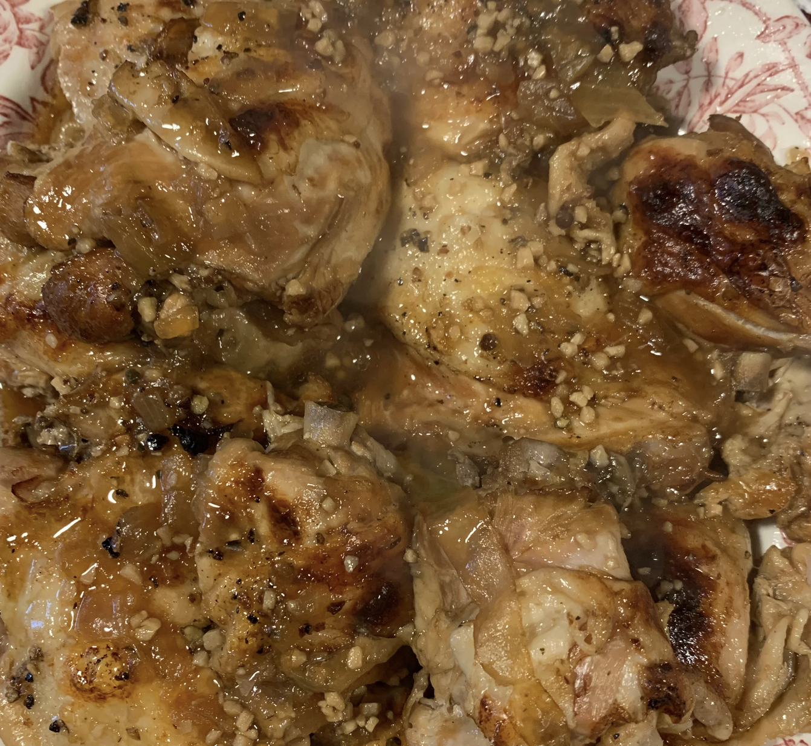

Adobo

Description
All the flavor you love in Filipino chicken adobo without hours of marinating thanks to the Instant Pot®. Serve over rice, if desired.
Ingredients
- ½ cup distilled white vinegar
- ¼ cup soy sauce
- 2 tablespoons minced garlic
- 1 tablespoon olive oil
- 1 tablespoon brown sugar
- 1 teaspoon black peppercorns, roughly cracked
- 2 leaf (blank)s bay leaves
- 1 large onion, sliced
- 1 ½ pounds bone-in, skin-on chicken thighs
- 1 tablespoon chopped scallions
Directions
- Whisk vinegar, soy sauce, garlic, olive oil, brown sugar, and crushed peppercorns in a bowl until sugar is dissolved. Stir bay leaves into the sauce.
- Line the bottom of a multi-functional pressure cooker (such as Instant Pot®) with onion slices. Place chicken thighs on top of onions and pour vinegar-soy sauce over top. Close and lock the lid.
- Select high pressure according to manufacturer's instructions; set timer for 10 minutes. Allow 10 minutes for pressure to build.
- Line a baking sheet with aluminum foil.
- Release pressure using the quick-release method according to manufacturer's instructions, about 5 minutes. Unlock and remove the lid. Using tongs, transfer thighs to the prepared baking sheet, skin-side up. Select Saute function and cook until sauce thickens, 3 to 5 minutes.
- Set an oven rack about 6 inches from the heat source and preheat the oven's broiler to high.
- Place chicken under the preheated broiler, and broil until skin is crispy, 6 to 8 minutes. Transfer thighs to a serving plate and spoon sauce over the top. Garnish with chopped scallions.